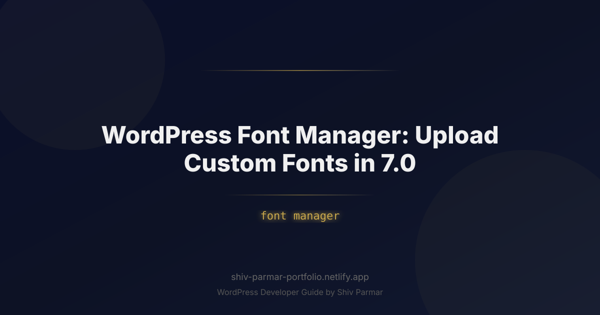

WordPress Font Manager: Upload Custom Fonts in 7.0 | Shiv Parmar
Table of Contents
Typography accounts for more than ninety percent of visual information on the web. For years, WordPress designers, agencies, and developers were forced to rely on heavy third-party plugins, complex child-theme enqueuing scripts, or external CDN calls to implement custom brand typefaces. These workarounds frequently resulted in severe Core Web Vitals penalties, render-blocking latency, layout shifts, and legal vulnerabilities under international privacy regulations like the GDPR.
The release of WordPress 7.0 refines the native font manager into an enterprise-grade typography engine. Building upon the foundational Font Library introduced in the 6.x cycle, WordPress 7.0 delivers a unified, zero-dependency environment for uploading, managing, and rendering custom fonts directly within the Site Editor and the underlying theme.json architecture. Whether you are building block themes from scratch, running an agency client workflow, or tuning a site for optimal performance, the native font manager fundamentally changes how digital teams handle web typography.
In this comprehensive guide, we will unpack the architectural mechanics of the WordPress 7.0 font manager. You will learn how to configure font collections, upload cutting-edge variable font files, write resilient theme.json declarations, mitigate Cumulative Layout Shift (CLS) through metric overrides, and leverage advanced programmatic APIs to maintain total typography control across enterprise multisite networks.
What is the WordPress Font Manager?
The WordPress Font Manager (technically referred to within core as the Font Library) is an integrated subsystem within the Block Editor and Site Editor that handles font asset management, server-side registration, and style generation. Instead of requiring developers to manually write @font-face CSS rules in an external stylesheet or load external scripts from Google Fonts or Adobe Fonts, the font manager treats typography families as native WordPress entities.
At its core, the font manager operates across three interconnected layers:
- The UI Layer (Styles Panel): Located inside the Global Styles panel of the Site Editor, this interface allows site administrators to view installed fonts, install pre-curated collections, or drag and drop custom font files directly from their local machine.
- The File System & Media Layer: When custom fonts are uploaded via the UI, WordPress routes the assets into a dedicated, isolated directory located at
wp-content/uploads/fonts/. These assets are indexed independently of standard media uploads, ensuring that font binaries are not polluted by standard image attachment queries, metadata checks, or automatic media regeneration tools. - The Configuration Layer (
theme.json& REST API): WordPress 7.0 maps both system fonts and custom uploaded fonts to the active global styles schema. Registered fonts generate atomic CSS variables (such as--wp--preset--font-family--brand-sans) and automatically inject optimized@font-facedefinitions into the server-rendered document head with precision control overfont-displayand source paths.
Crucially, the system decouples fonts from the active theme. If you switch from one block theme to another, your uploaded custom fonts remain preserved in your database and uploads folder, ready to be mapped to the typography tokens of your new theme.
Why the Font Manager Matters in 2026
Web development standards have hardened significantly over recent years. Today, typography decisions directly impact search engine indexing, user experience signals, and regulatory compliance. Relying on outdated methods to inject typefaces exposes your site to measurable technical liabilities.
| Feature / Metric | External CDN (Google Fonts, Adobe) | Legacy Font Plugins | WordPress 7.0 Font Manager |
|---|---|---|---|
| GDPR / Privacy Compliance | Non-compliant by default; leaks user IP addresses | Varies; often stores telemetry data | 100% compliant; self-hosted on your origin server |
| Core Web Vitals Impact | High risk of CLS and DNS/TLS handshake delay | Additional DOM nodes and duplicate CSS output | Near-zero latency; atomic CSS output and local preloading |
| Asset Format Support | Provider-dependent; frequent legacy fallbacks | Typically limited to basic static TTF/WOFF | Native WOFF2 and multi-axis Variable Fonts |
| Theme Interoperability | Requires brittle CSS overrides | Often injects high-specificity inline styles | Native integration with theme.json CSS custom properties |
| Server Overhead | Minimal (outsourced to third-party) | High; multiple database queries per page load | Optimized; cached inside persistent global styles transient |
Modern search engines place immense algorithmic weight on Core Web Vitals, specifically Interaction to Next Paint (INP) and Cumulative Layout Shift (CLS). Outdated font-loading approaches trigger layout instability when remote fonts swap over local fallbacks (FOUT - Flash of Unstyled Text) or hide page text completely until the network request resolves (FOIT - Flash of Invisible Text). The WordPress 7.0 font manager eliminates external DNS handshakes and SSL negotiations by serving assets directly from your origin or edge CDN, slashing Time to First Byte (TTFB) and stabilizing rendering timelines.
Additionally, data privacy regulations across the European Union, California, and multiple international jurisdictions strictly penalize the unauthorized transfer of end-user IP addresses to third-party CDNs without explicit opt-in consent. The WordPress 7.0 typography architecture is self-hosting by design: when you choose to install fonts from public collections like Google Fonts through the font manager, WordPress downloads the binary assets directly to your server, severing ties with third-party tracking vectors completely.
Step-by-Step Guide: Uploading and Configuring Custom Fonts in WordPress 7.0
Adding custom brand typography to WordPress 7.0 can be handled via the graphical Site Editor for end-users, or through declarative code for front-end developers building reusable themes. Below is the comprehensive process for both workflows.
1. Accessing the Site Editor Typography Panel
To access the visual font manager, ensure you are running a block-enabled theme (such as Twenty Twenty-Six or any custom agency block theme). Follow these initial steps:
- Navigate to your WordPress dashboard.
- Click on Appearance > Editor to launch the Full Site Editor.
- Select the Styles panel (represented by the half-black, half-white circle icon in the upper-right toolbar).
- Click on Typography within the Styles sidebar.
- Next to the "Elements" or "Fonts" header, click the Manage Fonts icon (a sliding toggle or font icon, depending on your custom admin configuration).
This action opens the native Font Library modal window. Within this modal, you will find three distinct tabs: Font Library (fonts currently registered by your theme), Upload (for manual binary uploads), and Install Fonts (for downloading collections directly to your origin server).
2. Uploading Custom WOFF2 and Variable Font Files
Before uploading, verify your font files. For optimal performance, utilize the WOFF2 (Web Open Font Format 2.0) container format. WOFF2 employs the Brotli compression algorithm, delivering file sizes roughly 30% smaller than standard WOFF and up to 70% smaller than legacy TTF or OTF files.
To upload your files via the UI:
- Switch to the Upload tab in the Font Library modal.
- Drag and drop your
.woff2files into the target drop zone, or click to browse your local directory. - If you are uploading a Variable Font, upload the single multi-axis file rather than several distinct weight files. WordPress 7.0 automatically detects the variable axes (such as
wght,wdth, orital) embedded inside the font metadata. - Review the uploaded font family name, weight mappings, and style designations inside the preview panel.
- Click Install to finalize the file transfer.
WordPress will validate the MIME type, sanitize the file headers to prevent malicious payloads, assign a unique post identifier or database entry, and place the file inside wp-content/uploads/fonts/.
3. Declaring Custom Fonts Programmatically via theme.json
While the UI is ideal for site creators, developers managing production deployments should declare their custom typography inside the theme's theme.json file. This ensures version-controlled consistency across staging, testing, and production environments.
First, place your font binaries inside your theme directory, typically within an assets folder: my-theme/assets/fonts/. Then, open your theme.json (Schema v3 or later) and declare the family under the settings.typography.fontFamilies array:
{
"$schema": "https://schemas.wp.org/trunk/theme.json",
"version": 3,
"settings": {
"typography": {
"fontFamilies": [
{
"fontFamily": "\"Cabinet Grotesk\", -apple-system, BlinkMacSystemFont, 'Segoe UI', Roboto, sans-serif",
"name": "Cabinet Grotesk",
"slug": "cabinet-grotesk",
"fontFace": [
{
"fontFamily": "Cabinet Grotesk",
"fontWeight": "100 900",
"fontStyle": "normal",
"fontDisplay": "swap",
"src": [
"file:./assets/fonts/CabinetGrotesk-Variable.woff2"
]
}
]
},
{
"fontFamily": "\"Satoshi\", system-ui, sans-serif",
"name": "Satoshi",
"slug": "satoshi",
"fontFace": [
{
"fontFamily": "Satoshi",
"fontWeight": "400",
"fontStyle": "normal",
"fontDisplay": "swap",
"src": [
"file:./assets/fonts/Satoshi-Regular.woff2"
]
},
{
"fontFamily": "Satoshi",
"fontWeight": "700",
"fontStyle": "normal",
"fontDisplay": "swap",
"src": [
"file:./assets/fonts/Satoshi-Bold.woff2"
]
},
{
"fontFamily": "Satoshi",
"fontWeight": "400",
"fontStyle": "italic",
"fontDisplay": "swap",
"src": [
"file:./assets/fonts/Satoshi-Italic.woff2"
]
}
]
}
]
}
}
}When you reference assets using the file:./ prefix inside theme.json, WordPress resolves the relative path against the theme root directory. The engine generates the appropriate absolute URLs and automatically injects the corresponding CSS classes and custom properties:
/* Automatically compiled and output by WordPress core */
:root {
--wp--preset--font-family--cabinet-grotesk: "Cabinet Grotesk", -apple-system, BlinkMacSystemFont, 'Segoe UI', Roboto, sans-serif;
--wp--preset--font-family--satoshi: "Satoshi", system-ui, sans-serif;
}
.has-cabinet-grotesk-font-family {
font-family: var(--wp--preset--font-family--cabinet-grotesk) !important;
}
.has-satoshi-font-family {
font-family: var(--wp--preset--font-family--satoshi) !important;
}
@font-face {
font-family: 'Cabinet Grotesk';
font-style: normal;
font-weight: 100 900;
font-display: swap;
src: url('https://example.com/wp-content/themes/my-theme/assets/fonts/CabinetGrotesk-Variable.woff2') format('woff2');
}4. Registering Custom Font Collections via PHP
For SaaS platforms, multisite networks, or enterprise installations, you may want to provide clients with a curated list of approved corporate fonts that can be installed with a single click, without exposing the open web. WordPress 7.0 exposes the PHP function wp_register_font_collection() to register custom, self-hosted font collections into the Font Library modal.
Add the following implementation to a custom functionality plugin or your theme's functions.php file:
<?php
/**
* Register Enterprise Font Collection in WordPress 7.0
*/
function prefix_register_brand_font_collection() {
wp_register_font_collection(
'enterprise-brand-fonts',
array(
'name' => __( 'Enterprise Brand Assets', 'textdomain' ),
'description' => __( 'Official corporate typefaces approved for digital publishing.', 'textdomain' ),
'font_families' => array(
array(
'font_family' => 'General Sans',
'name' => 'General Sans',
'slug' => 'general-sans',
'font_face' => array(
array(
'font_family' => 'General Sans',
'font_weight' => '200 700',
'font_style' => 'normal',
'font_display' => 'swap',
'src' => array(
'https://cdn.example.com/typography/general-sans-variable.woff2',
),
),
),
),
array(
'font_family' => 'Clash Display',
'name' => 'Clash Display',
'slug' => 'clash-display',
'font_face' => array(
array(
'font_family' => 'Clash Display',
'font_weight' => '600',
'font_style' => 'normal',
'font_display' => 'swap',
'src' => array(
'https://cdn.example.com/typography/clash-display-semibold.woff2',
),
),
),
),
),
)
);
}
add_action( 'init', 'prefix_register_brand_font_collection' );
Alternatively, the second parameter of wp_register_font_collection() accepts a string pointing to an external JSON endpoint (e.g., https://api.example.com/v1/fonts.json). When an endpoint is used, WordPress fetches and caches the collection schema, enabling distributed font management across hundreds of discrete WordPress installations from a central typography repository.
5. Fine-Tuning Fallbacks to Eradicate Cumulative Layout Shift
A frequent mistake when deploying custom typefaces is failing to adjust the fallback system font metrics. When the custom font downloads and swaps in over the default system fallback, differences in character widths (advance widths), x-heights, and line-heights cause the entire document below the fold to jump, damaging your CLS score.
With modern CSS rules (supported by all major evergreen browsers), you can override the baseline metrics of your fallback fonts so they occupy the exact physical bounding box of your custom font. You can inject these overrides through your global styles or child stylesheet:
/* Define metric adjustments on the fallback font */
@font-face {
font-family: 'Cabinet-Grotesk-Fallback';
src: local('Arial');
ascent-override: 95%;
descent-override: 25%;
line-gap-override: 0%;
size-adjust: 102%;
}
/* Use the adjusted fallback in your font stack */
:root {
--wp--preset--font-family--cabinet-grotesk: "Cabinet Grotesk", "Cabinet-Grotesk-Fallback", sans-serif;
}By adjusting size-adjust, ascent-override, and descent-override, you ensure that the fallback typography matches the custom font's metrics down to fractions of a pixel. When the network finishes downloading the primary WOFF2 binary, the visual swap is imperceptible to the browser layout engine, yielding a CLS score of 0.00.
Best Practices for WordPress Font Optimization
Managing typography is not merely an aesthetic choice; it is a critical engineering discipline that governs runtime performance. To ensure your custom fonts enhance rather than degrade your site, implement the following best practices.
1. Standardize Exclusively on WOFF2
Do not upload TTF, OTF, or SVG fonts unless you are forced to support legacy embedded browsers that are decades out of date. Modern browsers provide universal support for WOFF2. Stripping out legacy formats reduces your configuration complexity, eliminates redundant file storage, and ensures your users download only the most modern compressed format available.
2. Consolidate Weight Variations with Variable Fonts
Traditional static font families require distinct files for every variation: Regular (400), Medium (500), Semi-Bold (600), Bold (700), and their corresponding italics. Loading five or six static files can easily add 150KB to 300KB to the initial payload.
A single variable font contains all weight variations (and often width and slant variations) across a continuous axis within a single file of roughly 40KB to 70KB. Where available, choose variable fonts and configure the weight range in the font manager as "100 900".
3. Use Preload Directives Selectively
Preloading custom fonts informs the browser to prioritize the font binary high in the network waterfall, downloading the asset before the primary CSS has finished parsing. However, preloading too many fonts will saturate the network pipe, starving critical CSS, JavaScript, and Above-The-Fold images.
Follow the One-Font Rule: Preload only the primary body font or the hero headline font that is guaranteed to appear immediately within the viewport on initial page load. WordPress allows you to hook into wp_head to output targeted preload hints:
<?php
/**
* Preload primary custom font file for critical rendering path
*/
function prefix_preload_primary_custom_font() {
$font_url = get_theme_file_uri( 'assets/fonts/CabinetGrotesk-Variable.woff2' );
echo '<link rel="preload" href="' . esc_url( $font_url ) . '" as="font" type="font/woff2" crossorigin="anonymous">' . "\n";
}
add_action( 'wp_head', 'prefix_preload_primary_custom_font', 1 );
Note: Always include the crossorigin="anonymous" attribute on font preloads. Web font specifications dictate that fonts must be fetched via anonymous CORS mode, even if they reside on the identical origin. Omitting this attribute causes the browser to download the font twice.
4. Configure Unicode Range Subsetting
Many commercial and open-source font packages ship with comprehensive glyph coverage, including Cyrillic, Greek, Extended Latin, mathematical symbols, and decorative ligatures. If your publication serves predominantly English or Western European readers, up to 70% of those glyphs are entirely unused.
Use command-line tools like pyftsubset (part of the FontTools package) to strip unused character tables from your WOFF2 files before uploading them to the WordPress font manager:
# Strip non-Latin glyphs using FontTools
pyftsubset MyCustomFont.ttf \
--unicodes="U+0000-00FF,U+0131,U+0152-0153,U+02BB-02BC,U+02C6,U+02DA,U+02DC,U+2000-206F,U+2074,U+20AC,U+2122,U+2191,U+2193,U+2212,U+2215,U+FEFF,U+FFFD" \
--flavor=woff2 \
--output-file=MyCustomFont-Subset.woff2Subsetting a font typically reduces the file size from roughly 120KB down to an ultra-lean 18KB to 24KB, directly translating to instant text rendering on mobile data connections.
Common Mistakes to Avoid
While the WordPress 7.0 font manager dramatically simplifies typography configuration, developers and content teams frequently fall into predictable traps. Avoid these architectural and operational missteps:
1. Bypassing the Native Engine with Hardcoded @import Rules
One of the most destructive habits is declaring font URLs inside a custom CSS file using the CSS @import url(...) rule. The @import statement blocks the browser's parallel download pipeline, forcing the CSS engine to serialize requests sequentially. This introduces a cascading delay where the browser must request the CSS, parse it, identify the @import, request the second file, parse it, and finally request the font binary. Always register your fonts natively through the font manager or theme.json.
2. Overwriting Global Typography Without Defining System Fallbacks
When defining your custom font families in theme.json, never define the fontFamily property with only the custom font name. If an ad-blocker, firewall, or intermittent network failure intercepts the WOFF2 asset, or if the asset is slow to download, omitting fallback definitions leaves the browser with no explicit rendering instructions.
Incorrect:
"fontFamily": "Cabinet Grotesk"Correct:
"fontFamily": "\"Cabinet Grotesk\", -apple-system, BlinkMacSystemFont, \"Segoe UI\", Roboto, Oxygen-Sans, Ubuntu, Cantarell, sans-serif"3. Forgetting CORS Headers on CDN-Hosted Font Directories
If you route your wp-content/uploads/ folder through an external object storage provider (such as Amazon S3, Google Cloud Storage, or a Cloudflare R2 bucket) combined with a CDN, your font manager uploads will be loaded from a separate subdomain (e.g., cdn.example.com).
Because web fonts are subject to Cross-Origin Resource Sharing (CORS) security restrictions, modern browsers will block the font from loading entirely if the remote server fails to return the appropriate HTTP response headers. Configure your web server (Nginx/Apache) or CDN origin rules to emit the following header for all font extensions:
# Nginx CORS configuration for web font assets
location ~* \.(woff|woff2|ttf|eot|otf)$ {
add_header Access-Control-Allow-Origin "*";
add_header Access-Control-Allow-Methods "GET, OPTIONS";
add_header Access-Control-Allow-Headers "Origin, X-Requested-With, Content-Type, Accept";
expires 365d;
add_header Cache-Control "public, max-age=31536000, immutable";
}4. Uploading Disjointed Weight Files Instead of Leveraging fontFace Arrays
When manually registering multiple weights of the same typeface in theme.json, developers sometimes make the mistake of creating completely distinct fontFamilies entries for each weight (e.g., "Brand Sans Bold", "Brand Sans Light", "Brand Sans Regular").
This fragments your typography system. Site editors will see a disjointed dropdown of four different font families instead of a single cohesive family named "Brand Sans" with a clean weight selector (300, 400, 700). Always nest different weights and styles within the single parent family's fontFace array, mapping each file to the exact same fontFamily string identifier while differing only in fontWeight and fontStyle.
5. Neglecting Long-Term Cache Headers for Font Assets
Font binaries are immutable assets; once a font file is deployed, its glyph configurations and binary instructions almost never change. If you update the font, standard practice is to deploy it under a modified file name or version string. Consequently, font files should be cached aggressively.
Ensure that your hosting stack applies an explicit max-age of one year (31,536,000 seconds) along with the immutable flag to the wp-content/uploads/fonts/ directory. Failing to configure these headers forces return visitors to perform redundant validation requests (304 Not Modified checks) back to your primary application server, introducing avoidable latency to repeat page visits.
Conclusion
The introduction of the native font manager in WordPress 7.0 marks a major milestone for web creators and site owners alike. By streamlining how you upload and host custom fonts directly within the core interface, WordPress has made it easier than ever to refine your site's visual identity without relying on heavy third-party plugins. Taking control of your website's typography not only strengthens brand consistency but also improves performance and privacy compliance through native local font hosting.
As modern web design increasingly values both speed and distinct visual character, mastering these native font controls ensures your site remains ahead of the curve. Combining optimized typefaces with lightweight block-based styling gives your pages the polish they need while maintaining lightning-fast load times across all devices.
Ready to modernize your website, implement advanced design systems, or take full advantage of the latest WordPress features? Shiv Parmar is available for WordPress development work worldwide, offering expert support ranging from custom block theme creation to complete website performance overhauls. Get in touch today to elevate your WordPress project to the next level.